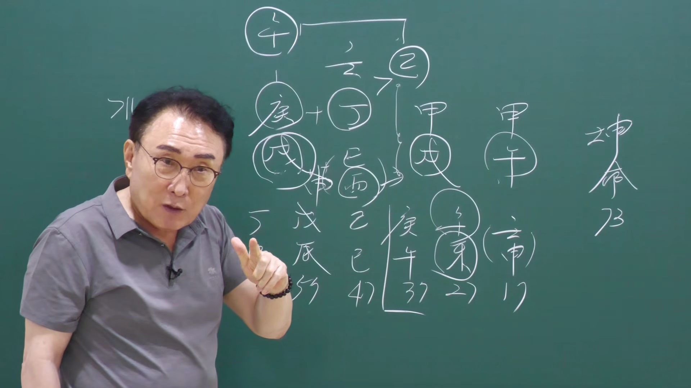

남촌물상TV 전체 문서 › 동영상 V0202
자식 때문에 걱정이 되면 이 영상 꼭 확인하세요

| 문서 번호 | V0202 (동영상) |
|---|---|
| 영상 URL | https://www.youtube.com/watch?v=54MVZEa_K3o |
| 영상 ID | 54MVZEa_K3o |
| 게시일 | 2026-07-29 |
| 길이 | 33:21 (2001초) |
| 조회수 | 339회 (수집 시점 기준) |
| 카테고리 | Education |
| 자막 | ko (자동생성) |
| 수집 시각 | 2026-08-30 19:08 (KST) |
영상 설명 (YouTube 설명 원문 그대로)
김대영 교수 사주 상담
010-3139-6645 예약필수
사주상담 # 물상론 사주# 명리학# 성명학# 궁합# 택일#
물형상# 운명학# 남촌물상론#
전체 자막 (790구간 · 타임스탬프 클릭 시 해당 장면으로 이동)
[0:00]음. 자, 안녕하세요. 오늘이 사주를
[0:03]널짓 보면은 그 사실 굉장히 힘들은
[0:06]사주예요. 여러분들이 풀기에 조금
[0:08]벅자요. 자, 여자 사주를 이제
[0:11]보시면 73세의 여자예요. 여자인데
[0:15]갑옷, 갑술, 정사, 경술이에요.
[0:20]이제 이런 사주를 보면은 어, 우리
[0:23]물상 지역이 배운 대로만 이해하시면
[0:25]돼요. 그걸 자꾸 딴 방면으로
[0:28]생각하지 말고 배운 대로만. 그럼
[0:29]이제 우리가 보시면 여기에서 지금
[0:31]제일 필요한게 뭐예요? 없는게 물
[0:34]아니에요. 물. 수란 말이에요. 그럼
[0:37]이게 뭐냐면 관이라는 개념으로 보시면
[0:40]되죠. 관은 내 남편, 내 아버지라고
[0:44]보시면 돼요. 근데 이제 아버지
[0:46]역할이 제대로 됐느냐 안 되느냐에
[0:50]따라서
[0:51]요때 큰 사람들은 가정 환경이 굉장히
[0:53]중요했죠. 음. 음. 그게 저만 해도
[0:58]아버지가 없는 집은 굉장히 가난하게
[1:00]살았어요. 근데 아버지가 있는 분들은
[1:01]대부분 좀 먹고 살만 했고 근데
[1:04]지금은 또 그것도 아니에요. 요즘
[1:06]보면. 어. 근데 지금 요런 경우는
[1:09]대부 아버지 역할이 없다고 봐야 돼.
[1:12]자 왜 그러하냐면 여기까지가
[1:15]태어나기 이전이란 말이에요.
[1:17]여기까지가 태어나기 이전. 내가
[1:19]태어난 날부터 내가 태어난 거예요.
[1:22]그러니까 갑년 갑술월에
[1:25]정사일에 내가 태어난 거예요.
[1:28]그러니까 여기 영역은 태어나기 전이라
[1:31]그 말이죠. 자, 그러면 여기 지금
[1:34]보시면 알다시피 좀 불로만 구성이 돼
[1:36]있어요. 갑옷, 갑술, 인호수이 다
[1:40]돼 있다. 그 말이야. 불타 없어요.
[1:42]그러니 불타 없 없으면 뭐가 말를까?
[1:46]불이 나면이 사주에서 불이 물이 맞을
[1:49]거 아니에요. 그렇잖아요. 물이
[1:51]말라. 그러면 아이 영역만 보더라도
[1:56]아버지의 영향이 없다. 이렇게 보셔도
[1:59]돼요. 관이 물 아닙니까? 불이면
[2:02]물이 여기 그 물이 없는데 사주에
[2:04]물이 말라. 그러면 물이라는게 내
[2:07]관이 아버지인데 어렸을 때 아버지
[2:10]역할이 안 된다. 또 그렇게 이해할
[2:12]수 있고 그다음에 목이라는 것은
[2:14]교육인데
[2:16]물이 고급이 안 되게 남무거 안 돼.
[2:17]그래서 교육이 안 되겠네. 배운 대로
[2:20]쉽게 여러분들이 이해하시면 아하 그냥
[2:24]사주가 눈에 보이게 됩니다. 그죠?
[2:27]자 목이라는 교육 건축 사람을
[2:28]상대하는 우리 배웠잖아요. 기초에서
[2:31]그러면 자 물이 없으면 나무가 안
[2:33]커. 그러면 결과적으로이
[2:36]그 내가 공부하는데 지장 있었을겠다.
[2:39]있잖아요. 내가 공부를 해야 되는데
[2:41]나무가 안 크니까 공부를 못 해.
[2:43]왜? 물이 없어서 아버지 영량이 안
[2:45]돼서 이렇게 됐다 그 말이에요. 이제
[2:47]이런 걸 보시고 아하이 사주가 이런
[2:49]사주네. 근데 여기에서도 전반과
[2:53]후반이 나면 여기에서도 술토가 있고
[2:55]여기에도 술토가 두 개가 있잖아요.
[2:57]이런 경우는 전반 후반적으로 보면
[2:59]돼요. 저번 후반. 그런데 대부분이
[3:02]보면은 이런 사주 보면 재운이 초연에
[3:06]와요.
[3:07]오잖아요. 근데 이제 재운이 끝나는
[3:11]무렵증 되면 시작은 재운이 없어요.
[3:14]그럼 어떻게 하겠어요? 제가 재운이
[3:16]여기서 어쨌든 왔어. 그 여기서
[3:17]재운이 끝났어. 살피수. 자,이 사람
[3:20]사주가 7대운으로 가기 때문에 47세
[3:24]이전까지를이
[3:25]전반기로 보고 47세 이후를 후반기로
[3:30]보자 그 말입니다. 그러니까 47세
[3:33]이후부터는 뭐요? 내 스스로 뭘
[3:36]만들어야 돼? 재물을 만들어야
[3:39]되겠네. 그러면 자, 모든 사람들이
[3:42]먹고 살기 위해서 가야 한다 이거야.
[3:44]뛰야 된다 이거지. 사주 보실 때
[3:46]목적이 뭡니까? 우리가 뭐 어 하면
[3:50]무슨 직업을 가지면 잘 먹고 잘 살
[3:53]수 있냐 하는 것을 현실적으로는 우리
[3:57]보는 거 아닙니까? 그죠? 제일
[3:58]중요한 필요한 그거예요. 내가이
[4:01]타고 때 무슨 직업을 갖고 살면 내가
[4:04]잘 살 수 있겠다. 무슨 사업을 하면
[4:06]잘 살 수 있겠다. 이것이 사주
[4:08]근본적인 원인 아닙니까? 그 제일
[4:10]필요한 것은 직업이 뭐냐에 따라서
[4:14]잡는 것이 제일 중요해요. 사주는 그
[4:16]그것이 이제 뭘로 되냐? 적성도 된다
[4:19]그 말입니다. 내가 잘할 수 있는
[4:20]것은 내 적성이 좋하는 거예요.
[4:23]사람이 잘할 수 있는 거 하면 잘
[4:25]되잖아요. 근데 생수하지 않해보고
[4:28]하기 싫은 걸 하게 되면 하기
[4:30]싫으니까 안 돼. 그걸 찾아 주는
[4:32]역할이 누가 해야 돼? 우리가 해야
[4:34]된다. 그 말이야. 굉장히 중요한
[4:35]역할 하고 있죠. 음. 자,
[4:37]그러면은이 사람 입장에서 우리 항시
[4:40]사주 볼 때 이제 첫째 물이라는
[4:42]개념이 없기 때문에 물은 나의 간이고
[4:45]내 남편이고 다 이런 관계예요. 또
[4:48]때로 가서는 아들도 돼요. 아들.
[4:50]그게 남자라면 다 해당이 된다. 관은
[4:53]이제 이렇게 이해하시면 되죠. 자,
[4:56]그런데
[4:58]그러면 자,이 사주 구성으로 하면은이
[5:02]나무를 기르는데 물을 갖다가 줘야
[5:04]나무가 될 거 클 거 아닙니까? 누가
[5:07]끌어다 주냐 그 말입니다. 여기서
[5:09]누가 끊어요? 정관에서. 자, 내가이
[5:11]정화에서
[5:13]임수를 끌어다가 나무에 물 줬다.
[5:16]그런 개념 아닙니까? 그러면 자,
[5:18]내가 벌어야이
[5:20]나무에 물을 줘서 재산도 증식할 건데
[5:23]그 얘기죠. 그러면 또 이제 답은
[5:25]뭐야? 뭘로 할 건데? 뭘로 해서
[5:28]네가 재물을 만들 거냐? 이게 답안
[5:30]아닙니까? 그건 어디에 찾으라고
[5:32]그했어요? 그렇지. 지지에 차지라고
[5:34]했잖아요. 행동으로
[5:37]뭘 사주는 아튼 물을 만들어야 뭐가
[5:40]되는 사주거든. 그래서 그래야 모두
[5:42]살잖아요. 그럼 이제 그 목표가
[5:46]설정이 됐다면 지지에서
[5:49]뭘 어떤 행동을 해야만이 내가이 돈을
[5:53]벌어서 먹고 가정을 이끌고이
[5:57]건물도 사고 해야 될 거냐? 이게 답
[6:00]아닙니까? 그러 이제 지지에서 보면
[6:02]물을 만드는 제가 뭐 있어요? 자,
[6:03]이게 이게 사유축이 요거만이죠.
[6:06]그죠? 잘 보세요. 답이 쉽게
[6:09]찾잖아요. 내가 행동해서이
[6:13]부동산을 살 수 있고 내가이 돈을 벌
[6:16]수 있다 하는 것은이
[6:19]사화에서
[6:20]결과적으로 먹고 살 건데 그 말
[6:23]아닙니까? 이제 여기까지 이해되셨죠?
[6:25]그럼 자, 내가 행동을 사화를 행동을
[6:27]해야 돼. 그러면 이제 행동을 했다는
[6:29]얘기는 뭐냐면 이제 글씨가 이렇게 써
[6:32]놓고 봐라 그 말이에요. 그럼지지
[6:34]행동이 아 술토도 있네. 그렇잖아요.
[6:37]여기도 술토가 있네. 그러면 이게
[6:40]이게 금국이 되려면 되려면 여기 경금
[6:45]있죠? 경금 있잖아요.
[6:48]경금 있으면 여기에 신금이라는 자체가
[6:52]붙어. 그럼 신수가 금국이 돼 있어.
[6:55]자, 한번 쉽게 이기자면 내가이
[6:59]사화에서 육금 행위를 하게 되면은
[7:02]신수이 된다는 개념을 이해를 하시면
[7:05]되죠. 그럼 돈을 잘 벌어, 안
[7:07]벌어?
[7:08]>> 벌 수 있네. 그런데 여기에 핵심에
[7:13]어려운 것이 또 하나 있지. 뭐가
[7:15]있을까요? 어떤 거 있어요? 자,
[7:19]정화는 경금을 녹일 수 있어요?
[7:21]없어요?
[7:22]>> 경금을 녹일 수가 없어.
[7:24]그러면
[7:26]돈을 잘 벌기 위해서는
[7:30]여기이 경금을 신금으로 만들면
[7:35]돈이대 쭉 된다 그 말이에요. 그죠?
[7:37]이해하셨죠?
[7:39]또 그럼 만들 때 어떻게 하느냐?
[7:43]내가 정림합 을목이 되면 되잖아.
[7:46]여기에 내가 정림합 을목이 되면
[7:50]을경합에서
[7:51]신금이 될 수 있어? 없어요. 있네.
[7:54]그러면이 여자가 돈을 버는 기술
[7:56]있어? 없어? 있다. 이렇게 하면
[7:58]답이 다 끝나는 거야. 사주. 어렵지
[8:00]않죠?
[8:01]이것을 전반적으로 여러분들이 이해를
[8:04]원고를 이해를 못 했을 때 사주가 안
[8:07]보이는 거예요. 아유, 저 교수님
[8:10]그전에 많이 알았는데 여기 막상 보면
[8:13]안 보여요. 이세기가
[8:15]순서를 모르고 어떤 관점의 체계를
[8:18]모르시기 때문에 어렵고 안 보인다고
[8:21]하는 거예요. 자, 내가 이렇게
[8:22]설명해도 안 보입니까? 너 설명할
[8:23]때만 보인다 그러죠, 황 선생님.
[8:25]응. 설명할 때만 보이고 집가
[8:27]잊어버려요. 또 그렇게 할 거
[8:28]아니에요. 근데 사실은 이렇게 하면
[8:31]다 눈에 다 돌아와요. 그러니까
[8:33]사주가 풀 때 우리 특히이 선생 분들
[8:37]어려운 거 아니야. 배운 대로
[8:39]순서대로 생각을 하면 답이 다
[8:41]나와요. 이제 이것만 이해하면은
[8:45]얼마든지 여러분은 손님한테 내가
[8:48]제시할 수가 있고 내가 무슨 얘기를
[8:50]할 수 있고 다 얘기가 될 수 있는
[8:52]거예요. 이것까지가 지금 제일
[8:55]핵심인데 가장 제가 요약해서
[8:58]여러분들한테 사주 푸는 방법을 쉽게
[9:00]쉽게 시간마다 제가 혀 주고
[9:02]있잖아요.이 기회를 놓치지 마셔야
[9:05]돼. 지금
[9:07]저도 무한장하게 노력을 하고 공부를
[9:10]합니다. 그 요새은 이제 이걸 이걸
[9:12]초월해서
[9:14]어 제가 도덕경에 그 어 그 소위
[9:20]인간의 그 경설을 가지고 거기에 대한
[9:24]학문적인 체계를 여기 해석에 엮으려고
[9:26]노력을 많이 하죠. 그래서 근본을
[9:28]나는 여기의 그 사상을 물상이란 것은
[9:32]노자의 자연의 이치가 인간의 삶의
[9:37]지혜가 되기 때문에 그러한 방법을
[9:40]여기 자꾸 되입시키려고 제가 연구를
[9:42]하고 있고 그렇습니다. 그러니까 저는
[9:44]여러분들한테 이거 그 사주 풀 때
[9:46]요거 하나만 풀어가고 상담하시게 잘
[9:48]안돼
[9:50]뭔가를 세상에 흘어가는 그 흐름과
[9:54]이치를 내가 상식적이가 있어야 돼요.
[9:56]내가 상식이 없는데 사주만 탈락 이거
[9:58]한다 해서 인간미와 형성과 사회적인
[10:01]접합성을 대질 않아요. 그러니까
[10:03]여러분들은이
[10:05]사주 푸른 것도 중요하지만
[10:08]기본적인 인간의 상식이 어디까지
[10:10]있느냐에 따라서 어떤 사람하고는이
[10:14]대화하면 토하고 어떤 사람은이 대화를
[10:17]나고 하면 이해가 가고 이것이
[10:19]대주하해. 근데 이제 똑같이 평행하다
[10:23]평행이고 생각해 그러면 안 되는
[10:25]거예요. 사람마이 다르고 수준이
[10:28]다른데 그 수준에 맞춰서 얘기를 해
[10:31]줄 줄 알고 상담을 해 줄 줄 알아야
[10:32]되잖아요. 그죠? 대학 나오면 대학
[10:34]나온 수준대로 그 사람만 얘기하면
[10:36]통하는 거고 초등학교 나온 사람들은
[10:39]초등학교 나온 사람 수준으로 그
[10:41]사람을 통해서 얘기를 해 줘야 된다
[10:43]그 말입니다. 쉽게 얘기해서
[10:44]여러분들은음
[10:46]저는 저는 늙었다고 생각을 안
[10:48]합니다. 제가 육체적이 늙었다게
[10:50]아니라 저는이 사회에서 내가 필요한
[10:54]사람이라고 생각하면 안 늙는다. 그건
[10:57]내가 늙게 생 늙다고 생각을 안
[10:58]해요. 자 우리가 늙어서 사람이
[11:00]뭐예요? 일할 수 없기 때문에 이제
[11:04]늙은이 뒷방신세를지고 있어요. 그럼
[11:06]나라는 사람은 지금 여러분들이 저
[11:09]필요해요? 안 필요해요?
[11:10]>> 필요하죠. 필요하기 때문에 난 늙은
[11:13]이거 아니야. 일할 수 있어라고 하는
[11:16]전제가 붙어는 거예요. 정답이죠.
[11:18]그래서 사회성과 인간성에 대한 공부를
[11:21]제가 해 보면 아 내가 늙었다.
[11:25]늙었어. 근데에 물론 육체적으로
[11:28]늙었다 합시다. 근데 늙은 늙은
[11:30]사람의 기준을 저는 설정할 때 내가
[11:32]필요한 사람이 있다라고 하면 저는
[11:34]늦지 않아요. 왜? 일할 수가 있기.
[11:36]이게 제가 핵심이에요. 저는 그래서
[11:38]제가 자신을 갖고 살고 아 나는 늦지
[11:40]않았어.
[11:42]나를 내가 나한테 모든 사람들이
[11:44]필요한 사람이 나가 있다면 나는 늦지
[11:47]않다.
[11:49]이런 생각을 가지고 제가 삽니다. 뭐
[11:51]옳은 생각 아니에요. 여러분들도
[11:53]마찬가지예요. 이것 배놓고 공부해서
[11:56]나라는 사람을 누가 찾아주고 필요한
[11:58]사람이 있다면 나는 늦지 않아요.
[11:59]왜? 늙어도 할 수 있는 일이기
[12:01]때문에. 그래서 저는 늦지 않는다.이
[12:04]전지역로 제가 활동하고 일합니다.
[12:08]그래서 아 제가 이제 그 책을 보고
[12:12]이제 이런 상식적인 책도 읽어 보고
[12:14]그 하면은 책이라는 것은 그 사람
[12:18]생각을 써 놓은 거 책이거든요. 근데
[12:20]그 사람 생각을 내가 받아들여서 내
[12:24]것으로 활용화시킬 수 있는게 그
[12:27]현명한 책 정보지. 소설 뭐 영자와
[12:30]순위가 뭐 영철리가 만나서
[12:32]데이터하고요 생각만 가지고 키면 안
[12:35]되는 거예요. 그 여러분은 책을
[12:36]보더라도 뭐야? 저 사람이 책이라면
[12:39]그 사람 생각을 써 놓은 거
[12:40]아닙니까? 근데 그 생각이 내가
[12:43]받아들여서 내 것으로 활용하시길 때
[12:46]그 책이 필요한 거예요. 그냥 그대로
[12:49]읽은 건 아무 의미 없어요. 그래서
[12:51]어 여러분들이 그 공부하실 때도
[12:53]마찬가지입니다. 어 제가 여러분들에
[12:55]설명한 것은 받아들여서 여러분들이
[12:59]활용화시켜서 내 것으로 전향시키면
[13:02]된다 그 말입니다. 자 이해 됐죠?
[13:04]자, 또 너 공부합시다. 자, 그러면
[13:07]이러한 그 사주를 쭉 훑어 보니까
[13:09]이제 답이 전부 다 계산이 나왔죠.
[13:12]자, 첫째 정화일주인데이
[13:16]시에 있는 경금이 재물이다. 근데이
[13:19]재물을 취할 수가 없다. 자,이
[13:22]재물을 취하기 위해서는 내가이
[13:25]관 내 직업적인 면을 끌고 와서 합을
[13:29]해서 을경합 신금이 됐을 때 지지의
[13:32]신술의 재물이 되기 때문에 큰 돈을
[13:34]벌 수가 있고.
[13:36]자, 그러면 없는 물을이 금국이 돼서
[13:40]금생수하니까이
[13:43]큰 나무들이 성장할 수 있어서
[13:45]부동산도 취할 수가 있고 재물을
[13:47]충분히 취할 수 있는 사주가 된다는
[13:49]것을 우리는 이해할 수가 있다.
[13:52]이렇게 정답을 딱 내릴 수가
[13:53]있습니다. 그래서 천관에서 내가
[13:56]천관에서이
[13:59]돈을 벌기 위한 것은 여기에 임수를
[14:02]끌어야만이 내가 돈을 벌잖아요.
[14:04]그죠? 그런 말 뭐냐? 내가 임수의
[14:08]내 관이 남편 역할을 내가 해야만이
[14:12]결과적으로이 지방이 성정이 되고 내가
[14:14]돈을 벌 수 있다는 것을 쉽게 알아야
[14:17]한다 그 말입니다. 그럼 여자가
[14:19]적극성 떼야 돼? 안 떼야 돼?
[14:21]뛰잖아요.
[14:23]남편이 하지 마라. 필요 없어. 난
[14:26]내가 할 거야.
[14:28]차고 나가야이 집안이 성생이 되는
[14:30]겁니다. 그래서 이런 사람들의
[14:33]경우에에
[14:35]그 행위를 하지 않으면 않으면
[14:38]아파요.
[14:40]아픕니다. 무슨 얘기냐면 물에 물을
[14:43]만들 수 있는 행위를 하지 않으면
[14:44]아프다 그 말이에요. 자 그러면
[14:46]지역에 살면 어디서 줄까?
[14:49]지역에 살면 어느 지역에 살면여
[14:52]>> 주위에 수원이 좋잖아요.
[14:55]>> 수원은 큰 물이야. 네.
[14:57]>> 임자란 말이에요.
[14:59]>> 그럼 손 임은 끌고 오잖아요. 그럼
[15:02]손에서 영업을 하면 잘 될까? 안
[15:03]될까?
[15:04]>> 잘돼. 근데 내가 한번 물어봐서
[15:06]손해다면 한자 손해가 오스텔를 하나
[15:09]가지고 있습니다. 건물을 가지고
[15:11]있다. 어떻게 하셨어요? 그래 내가
[15:13]아 거기 건물이 저 저 손에 건물
[15:15]있을 거다. 그랬단 말이에요.
[15:17]그러니까 왜 있냐?이 사람은 물이
[15:19]필요한 사례야. 그래서 있었어요.
[15:21]신기하죠? 그 말 신기할 것도 없어.
[15:25]여러분들이 배운 대로 생각하면 돼.
[15:27]자, 수원이란이 물을 가면 물을
[15:30]끌어면 나무가 커. 그러면 자,
[15:32]정리와 규 신금이 되면 돈을 벌어.
[15:34]뭘로? 먹는 걸로. 간단히
[15:36]나왔잖아요. 그러니까이 사람이 사람의
[15:39]수월의 건물이 있는데 문제는 이제
[15:42]뭐가 문제 한 사람이 그래요. 다
[15:45]좋고 다 좋은 건 없어. 자,이 세상
[15:47]사람들은 근심 걱정 얻는 사람 없고
[15:50]다 자기의 언한 구석을 보면 다
[15:53]마음에 뭔가는 다 있게 된게 세상
[15:56]사는 거예요. 사주를 보면 알아.이
[15:58]사주 어디에서 문제가 있겠어? 한번
[16:00]봐 봐요. 어디 문제가 있었겠어?
[16:02]자식자리 술투 아니에요. 요게
[16:04]문제라고. 자식자리에서
[16:06]인호술로 물을 말라. 그러고 내가이
[16:10]돈을 벌어서 얘한테 가면 돈이 말라
[16:13]안 말라? 말른다. 그 자식이
[16:15]속인사주야. 알고 보면 그니까 눈에
[16:17]들어오잖아요. 그럼 사주 구성에서
[16:20]내가 커 날 때도 굉장히이 술토
[16:22]때문에 고생을 했는데 역 늙년에도
[16:26]술토 때문에 고생하네. 이거의 답이
[16:28]자 타고 날 때 실을 잘못하고 뭐 안
[16:30]타고 났어? 잘못하고 났잖아요.
[16:33]그래서 사람이 태어날 때 시를 잘
[16:36]타고 놔야 돼. 그래서 어이 씨가
[16:39]제가 볼 때는이 사람 씨가 잘못되는
[16:41]거예요. 시가 잘못되는 거라고 자식
[16:43]자리에서이
[16:45]이호수하면 내이 금이 녹잖아.
[16:48]그렇죠? 이노수 하면 금이 녹아.
[16:52]그러니이
[16:53]오화가 오화가 어디 있어? 어디가
[16:56]붙어? 오화가 지금 오화가 어디
[16:58]있어요? 여기저요.
[17:01]>> 여기 여기 건축물이 날아가 안
[17:04]날아가? 날아가지. 그 그렇게
[17:07]생각하시면 되지. 왜?이 술토가이
[17:10]갑목의 갑옷의 인호수이 되니까이
[17:13]말르니까 결과이 건물이 날아가
[17:15]타불네.이
[17:17]물상적인 체계도 되잖아요. 그럼
[17:19]자식이 그 돈 주면 건물이 날아가
[17:21]날아가?
[17:22]>> 날아가?
[17:23]>> 날아가게 돼 있다. 근데이 사람이
[17:24]돈을 잘 줘요. 물어봤더니 잘 주고
[17:27]있어. 지금도 돈을 달라간다이
[17:29]말이야. 자, 우리가 이제 이런 걸
[17:32]보고 사주를 정확해 보니까 한 우리
[17:34]저이 선생님 그거만 볼게요. 잘 봐.
[17:35]여기 들어봐 설명을. 왜 자식이
[17:38]지금이 저 건물을 날려버겠는가를 생각
[17:41]보라 그러 왜 날린다고 내가
[17:42]설명했어. 여기에 술토가
[17:46]여기 갑목에 오가 붙었잖아. 그러면
[17:48]갑목이 인이라 붙어잖아. 인호수이
[17:50]되니까 갑목이 불타. 그럼
[17:54]자식자리를한테이
[17:56]신술의이 금국을 주려 보니까
[17:58]불타니까이 경금이 녹아. 그분이
[18:01]날아간다 그 말이에요. 이제
[18:03]이해되셨죠? 이제 그런 걸 아셔야
[18:05]돼요. 왔으면 그 하나를 배워갖고 잘
[18:07]배워가야죠. 확실히 배워야 나중에
[18:09]가서 사주고 아이고 얘기할 수가
[18:11]있지. 상담하시면서
[18:14]자 우리는 좀 더
[18:17]여기 창업반이니까
[18:19]누구 사주를 가져도 그냥 설명이 돼야
[18:22]돼요. 그게 사주 그러는데 내 사주
[18:24]어떤 사람은 사주가 잘 보이는데 어떤
[18:26]사람 안 보여. 그럼 안 보인 사주는
[18:28]가만히가 문 닫고 가만히서 있을래요?
[18:31]안 그렇잖아. 아니 손님이 안 써.
[18:33]근데 지금 사주가 안 보여. 그럼
[18:36]안바탕 가만히 있어. 뭐 할 거예요?
[18:38]그러고 안 되잖아.
[18:42]뭐든지 와도 내가 입이 척척 열려야
[18:45]돼. 그것을 지금 우리가 기초에서
[18:49]자꾸 배워서 배워서 응용해서 여기
[18:51]오셨으니까 여기 응용하시면 돼. 배운
[18:54]대로만 살아. 내가 뭐 업로 뭐 없는
[18:57]것을 붙여도 한 것도 아니고 기초
[18:59]시간에 했던 걸 가지고 여기다 다
[19:01]대입시켜서 그대로 해 주고 있잖아요.
[19:04]그러니까이 학문이 체계가 된 거예요.
[19:06]우리는 처음에 제가이 18년 전에 저
[19:09]이거 물상할 때는 체계가 안 잡혀요.
[19:13]왜? 확신이 안 서기 때문에. 그때만
[19:15]해도 내가 공부할 때 검증이 안
[19:18]되니까 확신이 안 돼요. 님들이 아
[19:20]맞아요.이 소리가 나와야 되는데
[19:22]그렇지 않는데요. 이러면 이제
[19:24]배어버는 거야. 그러면 이제 그는 그
[19:26]사람 보내놓고 나는 어떻게 총일 그
[19:28]생각만 하고 있는 거야. 이제 왜 안
[19:30]돼? 안 됐을까? 이걸 찾을 때까지
[19:33]어쩌든 쉽게 찾을 때도 안 찾을 때
[19:35]계속 안 찾으죠.
[19:37]그런 세월을 거쳐서 여기까지 온
[19:39]겁니다. 그래 여러분들은 가장
[19:42]정확하고
[19:43]검증을 거쳐서 한 거기 때문에
[19:46]여러분들은 공부하기 편해요. 이걸
[19:48]여러분들은 배우기 때문에 제일 좋다.
[19:51]지금 어 뭐 솔직해서 내가 한 장은
[19:54]소리 아니라 해라. 여기 막 유튜브나
[19:56]많이 합니다. 음. 사주 갔다 디터
[20:00]딱 내놓고 한번 풀어 봐. 못해요.
[20:03]엉터리 같은 소리 많이 나옵니다.
[20:05]지금 뭐이 입담으로 뭐 지금 유튜브가
[20:08]제일 인기 있는게 뭐냐면 자 지금
[20:10]올해가 지금 7월 달에요. 7월 달에
[20:12]우원새가 당신 뭐 사주에 금 있으면
[20:14]어쩌고 뭐가 있으면 어쩌고요 소리까
[20:17]그냥 좋은 거 그거 쳐다고 하니까
[20:18]구독자가 많이 늘었네. 우리같이
[20:20]장학문서로 한 사람 구독자가 안
[20:22]늘어요. 왜? 공부한 사람만 보니까
[20:25]바람잡이가 없잖아요. 바람잡이가
[20:27]거짓말로 내가 잘해서 막 입을
[20:29]떠들려야 되는데 그걸 못 하니까 안
[20:31]되잖아요. 공 그랬잖아. 공부한 사람
[20:33]맞아. 뭐 한 사람이 됐든 뭐
[20:36]20살이 됐든 뭐 100 사람이 됐든
[20:38]공부한 사람이 보고 그 어느 때 가면
[20:41]되겠다 하는 것을 저는 그걸 가지고
[20:43]쪽낸 거지. 내가 어 인기 얻으려고
[20:46]막 그 바람 잡아.
[20:48]속은 텅텅 비는 느낌이 얻어 뭐해요?
[20:50]아무 필요 없는 거지. 사주 갖다
[20:52]내놓 풀도 못하는데
[20:54]우리 그렇게 하지 말자 그 말이 잘
[20:55]안 합니다. 자 그러면 그니까 이제
[20:58]모든 부분이 다 끝난 거예요.요 정도
[21:00]이제이 원국 해설이 되면 다
[21:02]끝났습니다. 우리 저이 선생님 이제
[21:04]이해 갔어? 안 갔어? 다 갔어.
[21:07]오늘 확실히 갔어야 돼. 그 집에
[21:09]가도 아다 이거 보니까 내가
[21:10]잘했네라고 할 수 있는 정도가 돼야지
[21:12]이거 이거 배우셔서가 생각 아까
[21:15]들었는데 그 소리가 뭔 소인지
[21:16]모르겠네 이러면 안 된다니까 확실히
[21:19]내가 가야 돼
[21:21]>> 응
[21:21]>> 정 그러니까 그 정일관이에요 가을
[21:24]꼽히려고 하지 말고 원래 행위에
[21:26]해서음
[21:28]>> 자 그 해 줄게
[21:31]본래 정화라는 것은이
[21:33]갑목에 꽃을 피고 등불이 될 역할을
[21:35]해 준 사람이에요.
[21:38]근데 물이 없으니까 나무가 안 거.
[21:41]>> 근데 자 등불이 높이 달려야 불이
[21:45]멀리 비추고 내가 능력이 될 건데
[21:47]물이 없어. 나무가 안 크니까 요런
[21:49]밑에다 등불 달라는 무슨 의미가
[21:50]있겠어? 소용이 없지. 그러면 자 우
[21:52]제일 급한게 뭐냐? 아까 사주대로
[21:55]뭐예요?
[21:56]>> 물을 만들어져라. 그러니까 그것이
[21:58]내가 아이고 물을 내가 끊을 수
[21:59]있어. 그러다가 만드니까 지지의
[22:02]행동이요
[22:03]사유축에 유금이 돼 움직였네.요 요
[22:06]행위를 하니까 물이 돼. 그러니까
[22:09]이제 결과적으로 나무가 성장한
[22:10]거예요.이 됐죠?
[22:13]근데 원래 정화라는 특징은
[22:16]남을 인도하고
[22:18]큰 나무에 주 지주 역할 해 주면
[22:21]등불이 되고 이게 정화한 거예요.
[22:24]그거는 내에 대한 사상의 목표고 돈을
[22:28]버는 또 달라. 돈벌만 다른 거면 돈
[22:30]벌 돈 벌 거요.
[22:32]>> 아니잖아.
[22:34]>> 돈 돈 벌어. 그건 돈 버는 거하고
[22:36]구별이 돼야 돼요.
[22:38]>> 음.
[22:39]>> 아, 이제 이해됐어요.
[22:40]>> 이제 됐어요. 음. 그러니까 그것을
[22:43]이해하고 하셔야 돼. 돈 버는 것은여
[22:45]나무에 등분들하고 돈이 돼? 안 돼?
[22:47]>> 그래서 그 이렇게 되면은 갑한게
[22:50]그래서 그런 거예요. 갈등을 하는
[22:52]거예요. 마음속에.
[22:54]>> 자, 각값도 해. 근데 여기다 달까
[22:57]저기다도 혼더스럽겠지만
[23:00]>> 제일 중요한 것은 나무가 안 커.
[23:03]두 개 있는 뭐 세 개 있는 뭐
[23:05]전부다 요렇게 땅바닥에 굴려되기
[23:06]나무에다가 내가 등분 달아봐야 뭐
[23:09]요만큼 비치겠어요? 그것만 비치지.
[23:11]그러니까 급한게 나무를 켜면 커진
[23:14]거고 그 말은 이제 공부할 때나
[23:16]사회생활 할 때는 나무가 커진다는
[23:18]얘기는 뭐 부동산 교육 건축 사람 안
[23:21]한 거 아니에요. 그 부분이 커졌다고
[23:23]이해하시면 되지 그죠? 그러면 자 돈
[23:26]벌면 나머지니까 부동산이 생겼어 안
[23:28]생겼어?
[23:29]>> 생겼네. 간단하잖아요. 가장 쉽게
[23:32]지금 제가 설명을 하고 있는 거야.
[23:33]더 이상 쉽게 할 순 없어. 자,
[23:35]그럼 이제 여기서 다 끝난 거야.
[23:37]자, 또 의심한 거 없지? 그러면
[23:40]여기이 부분까지는 부분까지는 다 제가
[23:44]왔어요. 그죠? 자,이 17세가
[23:48]임신임 저 어 대운 아닙니까?
[23:52]총님 한목을 해야 내가이 먹고 사는
[23:55]길이 바빠.
[23:57]그렇잖아요. 그럼 17살 때이 사람이
[24:01]학교를 가려고 한게 아니라 뭘 해야
[24:03]돼? 돈을 벌러 가야 돼. 왜? 정림
[24:05]한목 월경갑 신금이 되니까 아이고
[24:07]돈을 벌어야 돼. 어려워 안 어려워야
[24:10]돼? 어렵잖아요. 자 그다음에
[24:13]여기 신이 신이라는 글씨가 왔어요.
[24:17]재물이 왔어요. 그러면 이제 하급
[24:19]금이라 해서 내 재물이라 하는데지지
[24:21]사오미야. 그럼 사오미가 되니까 자꾸
[24:24]뭘 끌고 와? 신금이 평화를 끌러갈
[24:27]거 아니에요. 가만히 있으면 그냥
[24:29]신금이 돼. 지지에 사오미가 되니까
[24:31]태양을 끌고 싶어. 그러도 신금인데
[24:33]병화를 끌고 할 거 아닙니까? 그럼
[24:35]끌고 요때 힘이 들어? 안 들어?
[24:37]>> 또 힘이 드네. 어렵잖아. 그러니까
[24:39]자 시집을 일찍가 못 가. 잘 못
[24:42]가지. 그럼 여기에서 가야지.
[24:44]이대원에서 그죠? 자 4위로 가면
[24:48]가지. 4위로 가면 되잖아요.
[24:50]요렇게. 그죠? 붕 합이 됐잖아. 또
[24:54]한 가지 더 신유술이 돼서 부부이 될
[24:58]때 부부 결혼할 그 결혼 요가요.
[25:01]그럼 자
[25:04]사로 될 때 결혼을 하게 되면 물이
[25:06]말르지.
[25:08]>> 그러면 자 신수될 때 결혼한다는
[25:10]얘기는 돈이 되 물이 안 말르지. 그
[25:13]어느 쪽을 택할래? 둘째 택한
[25:15]거예요.
[25:16]>> 그러면 결혼 시기를 정해줄 때 우리는
[25:18]뭐 해야 돼?지지
[25:19]지지 부부 공이 신술로 될 때를 찾아
[25:24]준게 좋죠. 그래요? 안 그래요?
[25:27]그러잖아. 어려운 거 아니잖아.
[25:28]그니까 부부 궁을 찾아 줄 때도 어느
[25:32]쪽이 유리하는가를 봐서 그 근 태기를
[25:36]해 줘라 그 말입니다.
[25:37]>> 우리이 사람은 신유트를 대야 되는데
[25:41]사유축이 돼야 되잖아요.
[25:42]>> 자, 그러니까이
[25:46]>> 사주가 6분만 놔도 돼. 그러면 이게
[25:50]6만 되면지지 신순이 돼요. 그러면
[25:53]이제 이런 사 신순이 됐다고
[25:54]가정합시다. 그럼 신수이라는 것은이
[25:58]경급의 뿌리가 신수이 됐던 거
[25:59]아니에요.
[26:00]>> 그러니까 돈은 눈에 보이는데 저걸
[26:03]내가 언제 채하지는 마음으로 결혼한
[26:06]거다. 이렇게 생각하면 되지고
[26:09]그죠?
[26:11]근데 여기이 사미로 해 버려. 사움이
[26:15]되니까
[26:17]결과적이 뭐예요?
[26:19]병화가 피해서 불이 되니까 나무가
[26:21]타지아요. 그러면 자 뭐야? 나한테이
[26:25]사오미는
[26:27]좋은 합은 아니죠. 이제 이런 걸
[26:30]구별해서 여러분들이 선택의 여지를
[26:33]정해 주셔야 된다 그 말입니다.
[26:36]자, 이해됐죠? 자, 그다음
[26:39]이제 여기까지는
[26:41]재운이 왔던 거예요. 여기까지는.
[26:44]자, 여기까지는 재운이 그래도 누구
[26:46]기운에?
[26:48]자, 어쨌든 뭐 남편이 있던간에 또
[26:51]그 기운에 먹고 산다 합시다. 근데
[26:53]여기 47대 운부터는
[26:57]이제 내가 내가 하는 운이에요. 실제
[27:00]내가 움직이는 운이야. 여기서도 물론
[27:02]움직였겠지만은
[27:04]여기서는 이제 맨땅 해이지 아무 운도
[27:07]안 하. 그럼 뭐예요? 내가 만들어야
[27:10]된다 그 말이야. 내가 만들어야 돼.
[27:12]그때는 운이 오니까 뭐 밥 재운이
[27:15]왔으 어쩌든 먹을 거 아니에요? 뭐
[27:17]굽든 잡든 뭘 거 아니야. 근데
[27:19]여기서 재운이 안으로 기수부터는
[27:21]그러면 여기서부터 어떤 현상이
[27:23]오겠는가를 이제 보자 그 말입니다.
[27:26]그럼 자이 기토가 잘 봐요. 각기
[27:30]합을 해야 될 거 아닙니까? 을목이
[27:31]돼야 이걸 하니까 이게 재물을
[27:33]취하니까. 그럼 각기 합이 갑하고
[27:36]합을 할 거냐 값고 할 거냐 그 말이
[27:39]>> 값수라고. 자, 잘 봐요. 어쨌든
[27:43]사움이에요.
[27:45]뿌리가 연결된 쪽으로 가서 정리돼야
[27:47]돼. 뿌리가 되는 쪽에 가서 정리를
[27:49]하라고요. 갑으로 가도 갑으로 간게
[27:51]좋아요. 갑술로 가도 돼.
[27:54]>> 자, 그런데 봐봐요.
[27:57]각격 을목이 됐다가 여기서
[28:00]자, 요렇게 걸이 돼, 안 돼?
[28:02]>> 그럼 신금이 되죠.
[28:04]>> 뿌리가 6금이 사이 되죠. 이렇게 볼
[28:06]수도 있고 요걸 요거하고 같게 하라모
[28:10]가게 했어. 그럼 자 요것도 신급이
[28:12]돼요. 그러면 요거 마찬가지야.
[28:14]그러니까 해도 상관이 없는데 원칙으로
[28:18]정하다 보면
[28:19]>> 합쪽으로 간 거다.
[28:21]>> 어측으로 정한 것은 그게 기준 설정을
[28:25]제가 해 드리는 거예요. 합을 할
[28:27]때는 뿌이 찾아서 합을하라고 그랬지
[28:30]내가 그냥 차한 거 아니었어요.
[28:32]그니까 원칙적으로 정해진 누구를 타고
[28:34]가서 합으로 계산한게 좋다. 이게
[28:37]우리 이제에 법 간법 중에
[28:39]법칙이에요. 법칙. 해설 법칙. 자,
[28:42]그러면 이때부터 본인이 이제 뭘 할
[28:45]건데 잘 봐 봐요. 여기서부터 이제
[28:48]뭘 복격지 사업으로 들어가야지.
[28:51]이제 여기서는 사업성이 있는게 아니라
[28:54]재운이서 사업성이 있는게 아니라
[28:57]재운이 온들 물이 없으면 금이 못
[28:58]커. 그잖아요. 우리는 금은 어디서
[29:02]놀라 그랬어?
[29:04]>> 근데요. 금이 온들 물이 없 물이
[29:05]없으면 뭘로 돼? 아무형 지물이야.
[29:09]안 되죠. 그렇죠? 자, 여기서는
[29:13]저기에 이제 불타는 걸 하나 제거해.
[29:16]제거해서 걸 하의 신금이 되 사이
[29:18]유금이 돼. 그죠? 그러니까 여기서는
[29:22]이제 사업상으로 돈을 벌려해? 안
[29:24]벌려해? 아, 벌려하겠네. 답이
[29:26]나왔어요.
[29:28]자, 그러면
[29:30]여기에서 돈을 잘 벌까요, 안
[29:32]벌까요? 기사 대운에 잘 벌 수
[29:34]있죠.
[29:36]꺼리 낀게 별로 없잖아. 그죠?
[29:39]꺼리낀게 걸린게 별로 없다. 근데
[29:41]여기서 57세 가면은 이제 여기서
[29:45]기로에 쓴 거예요. 이거 잘 보야
[29:47]돼. 자, 술적 저기 뭐예요?
[29:50]진토죠?
[29:52]>> 진술충 할래 그 말 아닙니까?
[29:54]진축할래. 여기는 암한 건 아니지.
[29:57]자, 그러면
[29:59]여기서 우리 생각할 때 뭐냐면
[30:01]무토라는 거는 어디다 쓸래? 그 말
[30:03]아닙니까? 감목을 심으려니까 여기
[30:04]심을 거 아닙니까? 그럼 부동산을 살
[30:07]거 아니에요. 그죠? 여기서 이제
[30:09]부동산이 생기는 문이죠. 자,
[30:11]이제까지는
[30:13]나무가 땅에 나무가 없어서 뿌리를 못
[30:17]내리고 있었다. 근데이 무토가 오니까
[30:21]여기에 무토를 하나 타니까 나무가
[30:25]심어진 거예요.
[30:27]아까 여기서 하발 요거 없애 버렸지.
[30:29]아까 했잖아요. 근데 여기 이제 여기
[30:31]남은 거지. 그러면 여기 무토가
[30:34]요놈이 심어진 거죠. 맞죠? 자,
[30:37]그럼 심어졌다는 얘기는 우리가 예상할
[30:38]때 뭐예요?이 사람은 여기서 돈을 좀
[30:40]벌었겠지. 그럼 뭔가 살랑할 거
[30:43]아니에요. 뭐 부동산을 사거나 할
[30:45]거. 그 요때 우리는 뭐 뭐라고
[30:46]얘기하냐? 부동산이 올 건데 산 일이
[30:50]있냐? 이때 부동산이 괜찮았는데 그
[30:52]대신
[30:54]짚어 줘야지. 짚을게. 뭘 짚을까?
[30:56]그렇지. 대출. 자, 갑목을 심어서
[31:01]자기 술토가 왔는데 경리불이 유금이
[31:04]신임이 붙을 거 아니에요. 그럼 먹는
[31:06]장사람축 유금이 붙었죠. 신술이
[31:09]되니까 요때는이 신금이란 자체는 이게
[31:13]대출 금리야. 대출. 자, 봐요.
[31:16]수트는 그냥 있어. 그 우는 내 거
[31:19]기 아니야? 아니야.이 돈은 목
[31:23]원제가 목표라 그 말이지. 그러면
[31:26]활용하려니까 큰남이 물을 많이 줘야
[31:28]되잖아. 그러니까 자 신이라는이
[31:30]글씨가 뿌리가 신이 온다는 얘기는
[31:33]신유술이 되는 거야. 그러면 자
[31:36]지지에는 사육체 내가 활동하니까
[31:38]술토와 유과 술토가 그냥 있는
[31:40]거예요. 근데 내가 신금을 끌어졌을
[31:44]때는 이게 이게 새로운 신금이 온 거
[31:46]뿌리가 온 거죠. 그러기 때는 뭐냐면
[31:49]그거는 은행 대출권이에요.
[31:52]그러면 요때 샀을 때 은행 대출을
[31:54]안고 샀는데 괜찮았느냐?
[31:57]괜찮죠. 괜주 그러면 자이 술토가
[32:02]술토가 잘 봐요.
[32:05]진술충을 할래? 임묘진을 할래예요.
[32:08]또 진유학금을 할래예요. 계산이
[32:10]나오죠? 자, 아까 아까 잘 봐요.
[32:14]각기 합에서 을목이 돼 있잖아요.
[32:16]하나가
[32:17]>> 아까 그럼 묘가 붙은 얘기예요.
[32:20]그죠? 묘가 붙어잖아. 하나가 을목이
[32:23]없으면. 그럼이 감목이 살아 있어요.
[32:24]그럼 인이 붙어 임묘지 대한데 대한
[32:26]그 부동산 연계 있다 그랬잖아요.
[32:29]근데 이거는 이거는 아까이 신금이
[32:32]온다 할 때 신자진의 개성도 가지고
[32:36]있는 거죠. 그래서 은행권이란
[32:38]얘기예요. 왜 은행이라고 하냐?
[32:41]그래서 은행이라 한다. 근물
[32:42]유통식인데 어디야?
[32:45]>> 은행 아니에요. 저 근거 없는 얘기
[32:47]안 합니다. 확실한 근거를 가지고
[32:49]얘기 드리는 거예요. 그러니까 은행에
[32:53]대출을 끼고 많이 끼고 샀다. 이때이
[32:56]사람이 아까 건물 어느 정도 샀냐?
[32:59]감목의 건물이 5층 이상 건물 가지고
[33:01]했죠. 물어 맞는 거지. 그래서
[33:05]7층에
[33:06]건물을 가지고 있었다. 그럼 왜
[33:08]7층이까? 또 생 궁금하지다. 왜
[33:10]7층이었을까? 왜
[33:13]>> 그렇지? 내가 정화하니까 2치화야.
[33:15]7층 7층에이 등불을 달았네.라고
칠판 원국 판독 (영상 프레임을 AI가 시각 판독 · 원판 대조 필수)
坤造
천간
庚
천간
丁
천간
癸
천간
甲
지지
戌
지지
未
지지
酉
지지
午
판독 신뢰도: 중간
판독 노트: 坤命 73세(1954 甲午년생), 대운 壬申11→丁卯61 역행, 巳酉丑 금국·午戌 반합 주석, 시지 활자 애매 표기 · 시점 25:01 · 해당 장면 보기↗
자막은 YouTube에서 제공하는 한국어 자동음성인식(ASR) 트랙의 원문입니다. 고유명사·한자 용어·숫자 표기에 자동인식 특유의 오류가 있을 수 있어, 원문을 가능한 한 그대로 보존했습니다. 위에 칠판 원국 판독 섹션이 있는 영상은 화면 프레임을 AI가 시각 판독한 것으로 신뢰도 표기를 확인하고, 없는 영상은 화면 도표가 문서에 포함되지 않습니다.